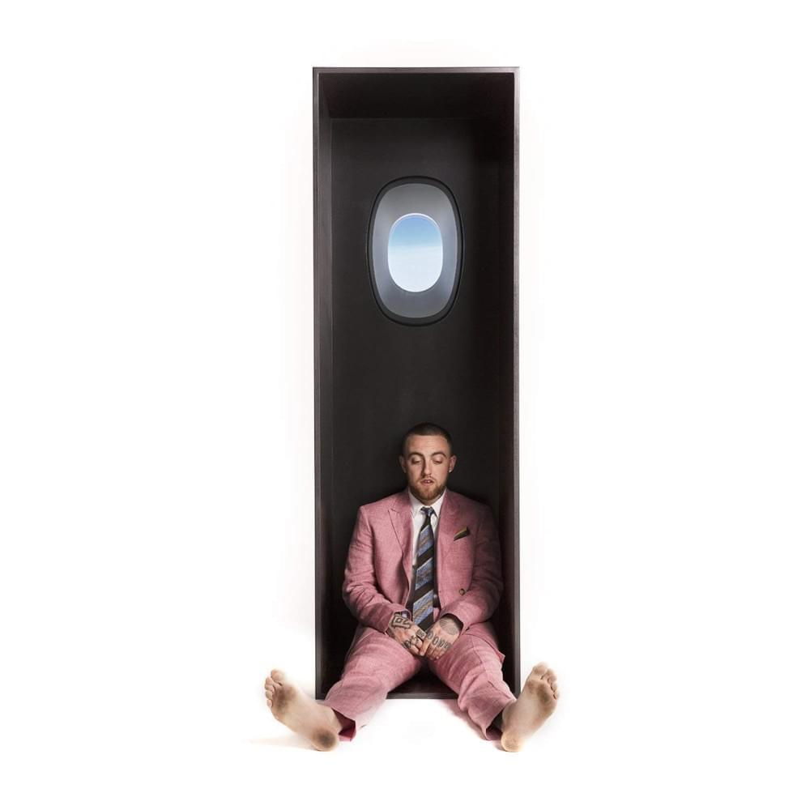
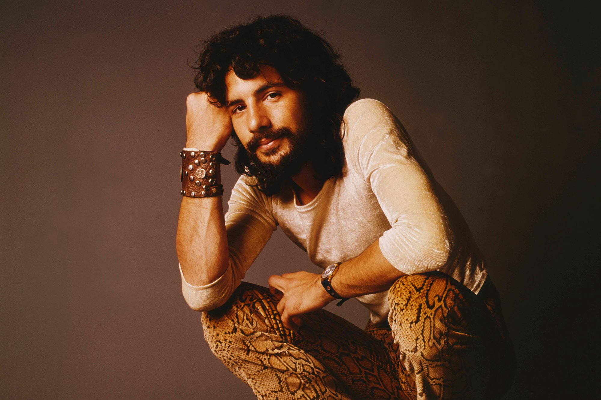
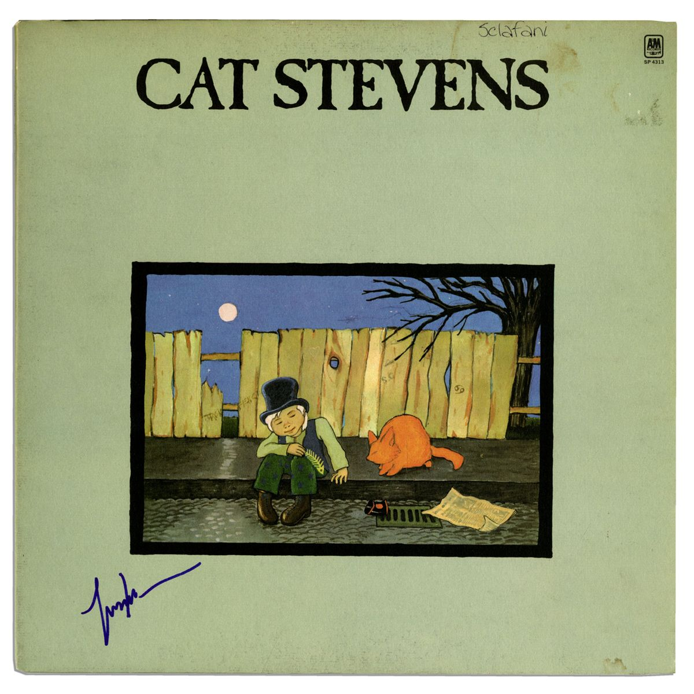
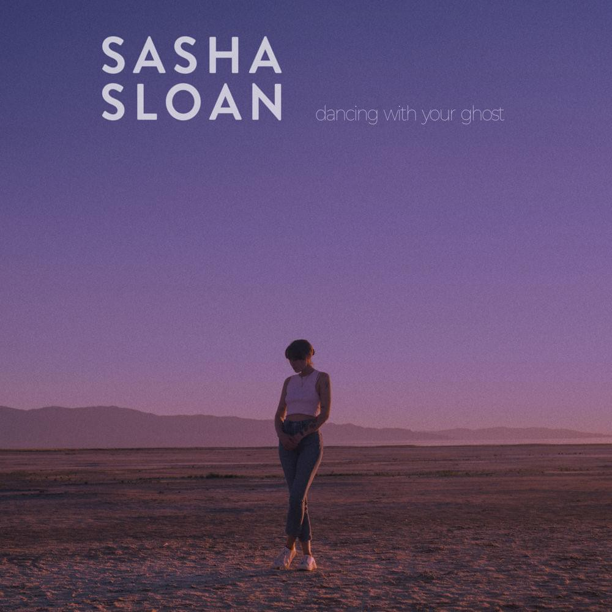
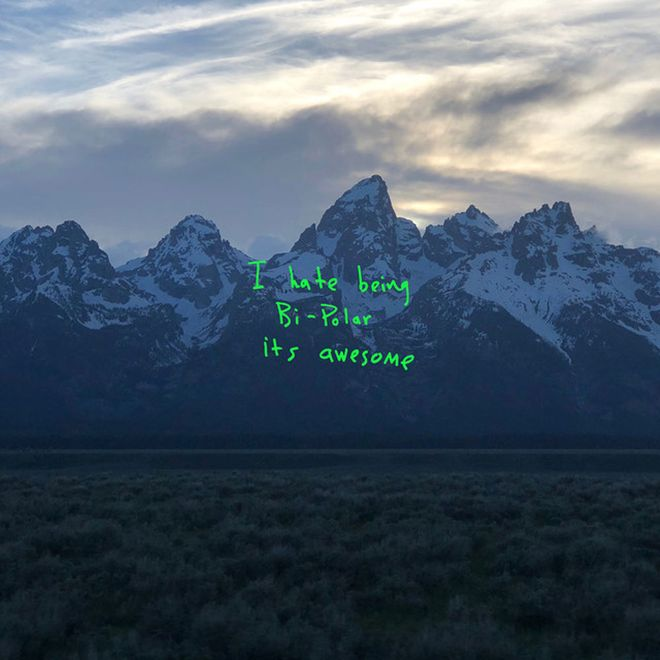
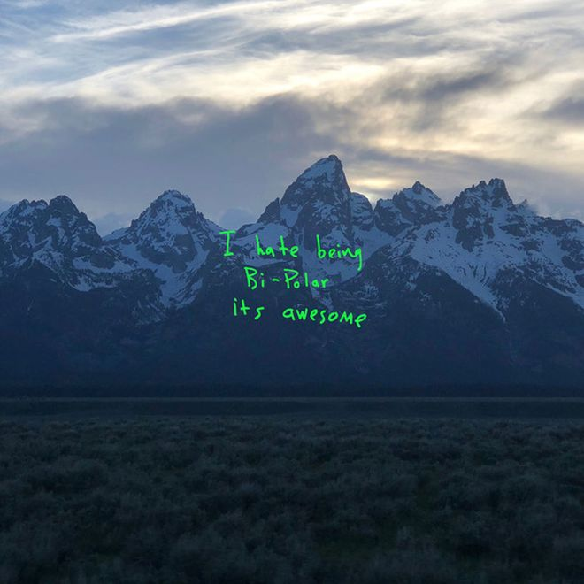

Though Slow Burn has only been out for a few years, it has quickly become one of my favorite songs. The sing is about being patient as you go about your life, and about watching life slowly unfold instead of rushing through it. As a person who tends to worry about the future and about doing everything I can, this song is a great reminder to take a step back and enjoy life as it comes. It is a favorite among some of my closest friends as well, and every time I listen to it I always think of them.
This song is a unique mix of creative production tactics and lyrical beauty that I have rarely found in other songs. Mac Miller has a very distinct voice to begin with, and in this song he uses synthesizers, vocal filters, and a slew of instruments to create an even more mesmerizing sound. The meaning of the song is equally beautiful as well: the song is about regaining your strength after dealing with mental health issues, and about coming out stronger after moments of depression. I can relate to some of the moments described in this song, and I love that it allows me to reflect on struggles I've had in my past and how much I have improved in the time since.
 Much like the other songs on this list, this song is one of my favorites because of the meaning of its lyrics. The song is about finding hope wherever you go, which is communicated using the metaphor of a "Moonshadow." Stevens uses lyrics that describe hypothetical scenarios, such as "if I ever lose my legs, I won't have to walk no more" to communicate that no matter what happens, it is best to accept the experiences in life as they come, and to remember that there is always hope, even in dark times. I grew up listening to this song with my family as well, which adds some extra sentimental meaning to it for me.
Though it may sound strange, I love this song because it is the most jarringly sad song I've ever heard. The song is full of gut wrenching lyrics, and even begins with the line "Yelling at the sky, screaming at the world, heaven only knows I'm still your girl." This is one of the few songs I have ever cried after listening to the first time, and the emotional rawness of the entire song makes it extremely unique. The song is about breaking up with someone when you don't actually want to be apart from them, and thus you are just left "dancing with their ghost." I find this to be a beautiful way of describing such a painful scenario, and the song wows me every time I listen to it.
 

As per usual with Kanye's music, the production of this song is one of the key factors that makes it stand out. Nicki Minaj is also featured at the end of the song, where she does an intimate spoken-word piece to close out the song. The song itself is about how having daughters changed Kanye's outlook on life and on women in general. I love how vulnerable Kanye is in the song, and I find it interesting to hear about how emotional he can be despite the media's portrayal of him.